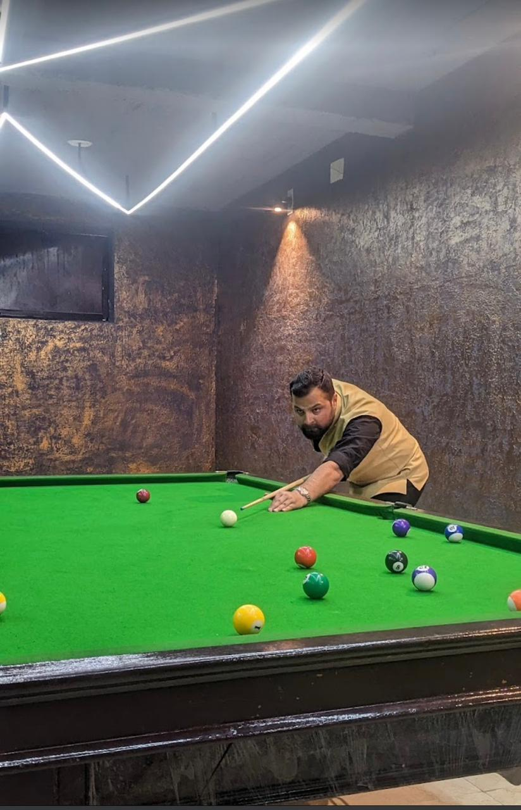
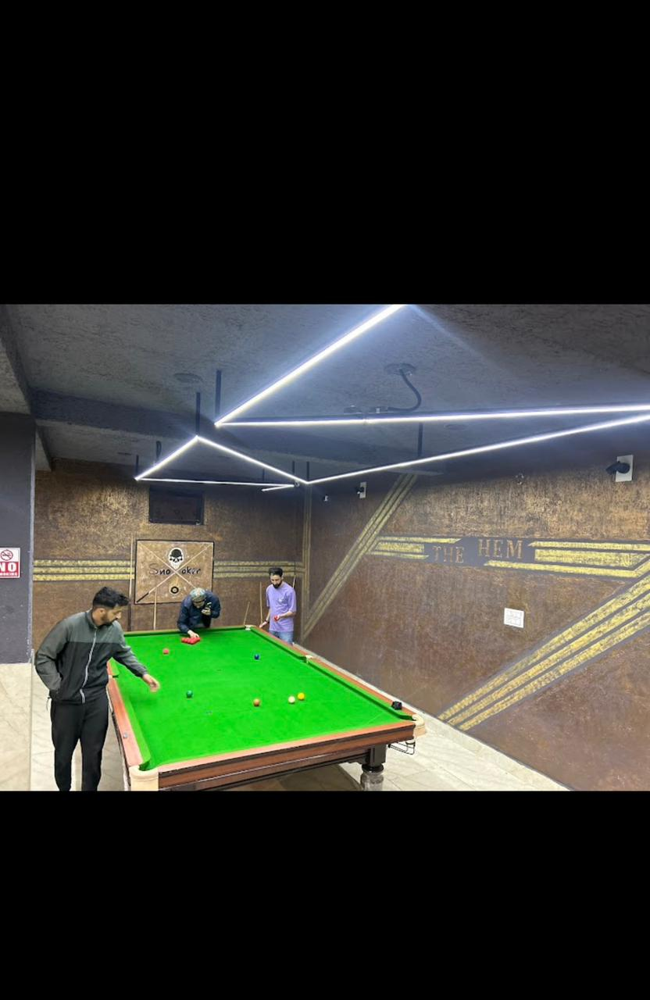

In the hallowed halls of The Crucible Theatre, Echoes of champions linger, tales etched in oak. Davis, Hendry, O’Sullivan—their cues like quills, Writing sagas of nerve, resilience, and iron will. The spotlight narrows, shadows lengthen on felt, As nerves tremble, and destiny hangs by a thread. A single pot—a universe of possibilities— The white ball tiptoes, fate’s delicate trapeze. The referee’s voice—a metronome of order, Calling fouls, respots, moments frozen in amber. And the crowd, a chorus of gasps and roars, Their loyalty unwavering, their passion aflame. So here’s to snooker—the art of geometry and nerve, Where every shot is a stanza, every frame a verse. In smoky arenas or quiet clubs, we gather, To witness the poetry of baize, forever enamored. For in snooker’s embrace, time slows, And we become part of its lyrical prose.
 Remember, the beauty of snooker lies not only in the precision of the game but also in the stories it weaves across generations.